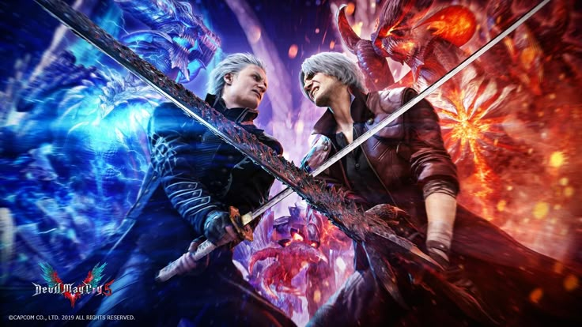
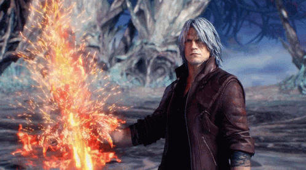
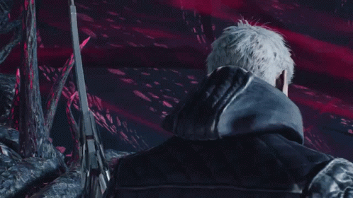
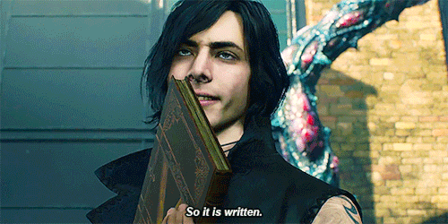
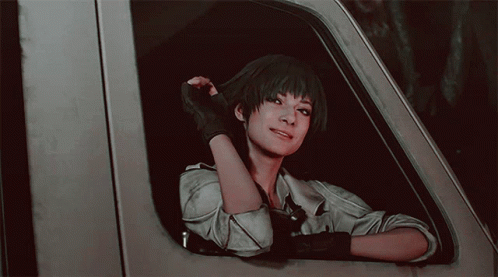

Kalau ditanya game hack and slash apa yang mekanik kombonya paling memuaskan sepanjang masa, jawabannya jelas Devil May Cry 5! Game ini bener-bener gila. Capcom berhasil nampilin visual yang super fotorealistik pakai RE Engine, dibarengi sama transisi musik yang bakal makin kencang kalau ranking kombo lo makin tinggi (dari D sampai SSS!).

⚔️ PERINGATAN!: VERGIL ADALAH HUSBANDO IKA TERCINTA ⚔️
📖 Lore & Hubungan Keluarga yang "Agak Lain"
Dante (The Legendary MC): Di DMC5, Dante tampil sebagai pemburu iblis veteran yang karismatik tapi tetep petakilan. Dia adalah karakter paling kompleks dengan 4 gaya bertarung (Styles) dan tumpukan senjata gila—mulai dari motor raksasa yang dibelah jadi pedang (Cavaliere), sampai topi koboi yang bisa nembakin Red Orbs (Dr. Faust). Di sini dia juga bisa mengakses Sin Devil Trigger, wujud iblis sejatinya yang saking kuatnya bisa ngebikin musuh lenyap dalam sekejap! Paling ribet dimainin, tapi kalau kombonya dapet, langsung berasa jadi Dewa Game!

Lore DMC5 ini berpusat pada kembalinya ancaman iblis melalui pohon raksasa bernama Qliphoth. Tapi di balik urusan menyelamatkan dunia, inti cerita game ini sebenarnya adalah drama keluarga Sparda yang hobi berantem pakai pedang:
Sisi Kemanusiaan vs Iblis: Di awal game, ada sosok misterius bernama Urizen yang kuat banget. Ternyata, Urizen itu adalah perwujudan sisi iblis dari Vergil yang memisahkan diri demi dapet kekuatan absolut, sedangkan sisi manusianya berubah jadi cowok puitis bernama V.
Nero sang Anak Durhaka (Canda): Plot twist terbesarnya adalah Nero akhirnya tahu kalau Vergil itu adalah bapak kandungnya yang dulu pernah motong tangannya demi ngambil pedang Yamato. Makanya di akhir game, Nero dapet wujud iblis penuhnya cuma buat misahin bapak sama pamannya (Dante) yang gak capek-capek berantem.
The Return of The King: Pas V dan Urizen menyatu kembali, Vergil bangkit lagi dengan sejuta kharisma, pedang Yamato-nya, dan gaya bertarung super cepat yang bikin merinding!
🎮 Gaming Experience:
Mainin DMC5 itu gak bakal bosen karena kita bakal dikasih experience dengan gaya bertarung yang beda jauh di setiap misi dan karakter nya:
Nero: Mengandalkan lengan robot (Devil Breaker) yang punya fungsi unik—mulai dari ngeluarin setruman, jadi roket yang bisa dinaikin, sampai memanipulasi waktu.

V: Karakter paling unik karena dia gak bertarung langsung, melainkan memakai tiga bayangan iblisnya (Shadow, Griffon, Nightmare) sambil baca buku puisi di pojokan. Gaul banget! dan dia looks very EMO

Lady (Mary): Pemburu iblis cewek yang paling badass karena dia adalah 100% manusia murni tanpa darah iblis sama sekali! Walaupun manusia biasa, Lady gak bisa diremehkan. Dia bertarung mengandalkan kelincahan akrobatik dan tumpukan senjata api berat, terutama bazoka ikoniknya yang punya pisau bayonet raksasa bernama Kalina Ann. Di DMC5, dia bareng Trish sempat kena tangkap dan dijadiin inti energi buat monster iblis, tapi untungnya berhasil diselamatkan sama Dante dkk. Karakter yang membuktikan kalau gak perlu punya kekuatan magis buat jadi keren!

⭐ Kesimpulan Akhir
Secara keseluruhan, Devil May Cry 5 adalah mahakarya mutlak buat para pencinta game action hack and slash. Dengan grafik RE Engine yang super halus, cerita drama keluarga Sparda yang seru, sampai hadirnya Vergil sang husbando terbaik, game ini bener-bener gak membosankan walaupun dimainin berkali-kali buat ngejar ranking SSS. Rating mutlak dari gue: 10/10! Yey! 🎉🔥